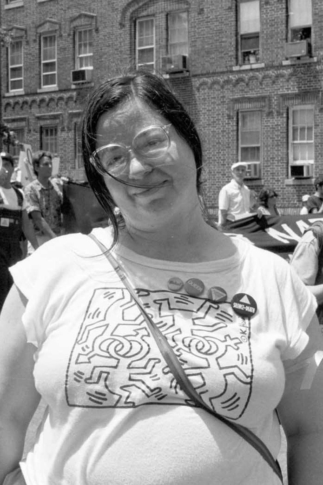
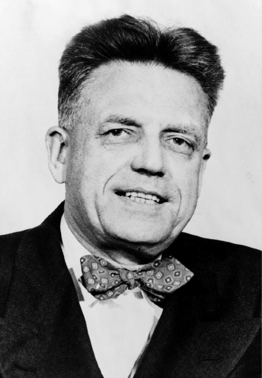
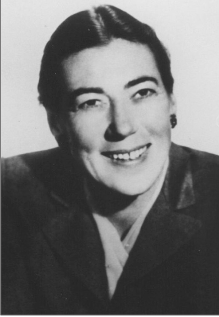
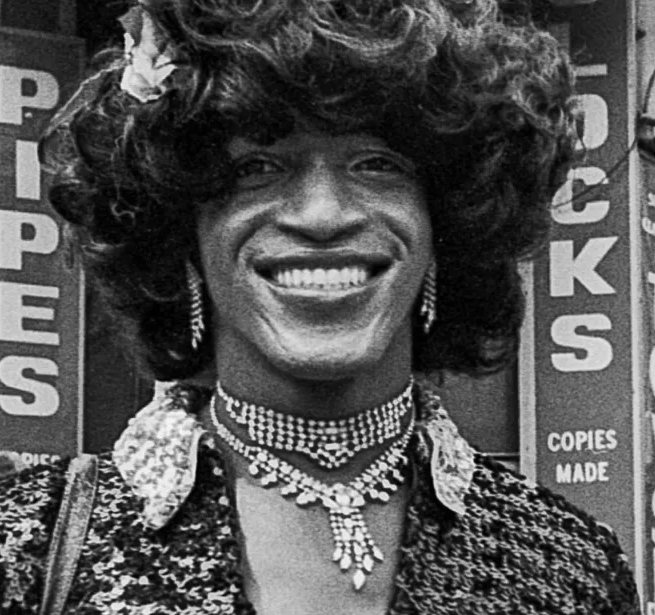
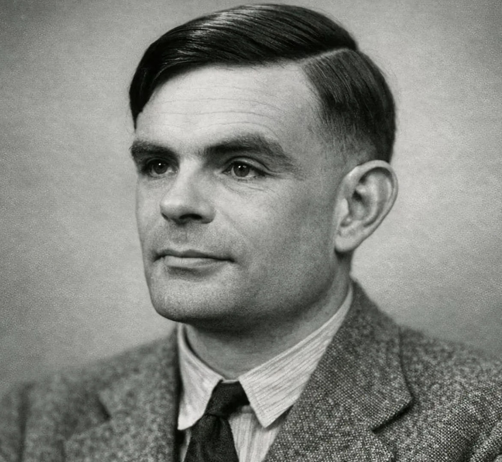

Brenda Howard was born in 1946 in America, in a Jewish family and graduated college with a degree in nursing. She realised early on after participating in the movement against the Vietnam War that men had a too big domination in society and decided to join the feminist movement. She was member of multiple groups like the Gay Liberation Front and played a big role during the AIDS crisis. She is most well-known for participating in the organisation of the first Pride march in New York City 1970 just one year after the Stonewall uprisings. She is now called the “Mother of Pride” and worked for decades to increase understanding and visibility for bisexuals and other minorities.
Alfred Kinsey was born in 1894 in the United States in a strict religious household. His most impressive works are his studies on the “Sexual Behaviour in the Human Male”, published in 1948, and later “Sexual Behaviour in the Human Female” in 1953. That research led to the creation of the Kinsey Scale, a scale from 1 to 6 that “ranked” your homosexuality, showing that sexuality was a spectrum and not rigid labels. His research got many critics, mainly from conservative groups that accused him of promoting immoral ideas. But his work later became an important source of justification against medical classification for the LGBTQ+ community. Alfred Kinsey died in 1956.
Evelyn Hooker was born in 1907 and obtained a doctorate in psychology. After she lived with a family of Jews that got killed in concentration camps, she started to have a desire to help overcome social injustices. And in 1957 decided to conduct an experiment where she studied the mental health of a heterosexual and homosexual man. The results showed that there was no significant difference between both of their mental health. These results were used as an example to remove homosexuality and gender identity as a mental illness with the APA (American Psychiatric Association) in 1973.
Marsha P. Jonhson was born in 1945 in an African American family. From a young age she experienced discrimination due to her gender expression. When she moved to New York city, she faced homelessness and had to find work through sex work. It was believed that she was on the front lines during the Stonewall uprising, fighting against police violence. After Stonewall, she continued her activism and co-founded STAR (Street Transvestite Action Revolutionaries), a housing that supports homeless LGBTQ+ youth. It was one of the first association that focused mostly on trans survival. She helped during the AIDS crisis and was often called the woman who gave a lot despite having nothing herself. She sometimes faced exclusion from the LGBTQ+ movements due to racism and transphobia, which degraded her mental health over time. She was found dead in the Hudson River in 1992, while the reasons are not clear, many believed that she committed suicide.
Alan Mathison Turing was born in 1912 in England. From a young age, he demonstrated a particular interest in mathematics and computers. After graduating from the University of Cambridge in the early 1930's, he developed the “Turing machine”, a machine that laid the groundworks for modern computers. His most impressive work was during World War II, when he deciphered the German Enigma code (a machine used by Nazi Germany to send encrypted messages). His contribution significantly shortened the war, but due to his revealed homosexuality in 1952, he was forced to endure chemical castration and later developed depression and body change that were a direct effect from his medical treatments. In 1954 he died of cyanide poisoning, widely believed to be suicide.